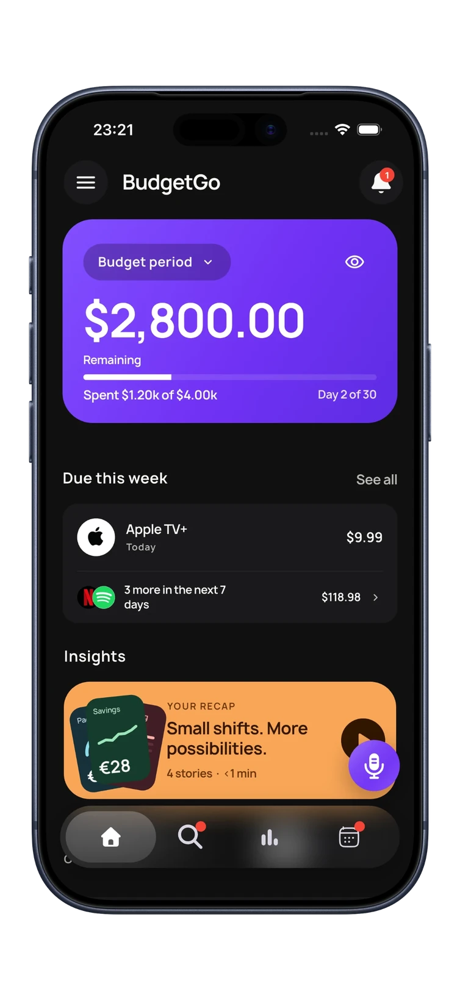

Why we built insight stories
Most budgeting apps give you a dashboard: charts, totals, a list of categories. All useful, and all easy to ignore. Looking at a pie chart doesn't tell you whether last week was normal, or what you'd change.
We wanted BudgetGo to do the interpreting for you. So instead of asking you to read charts, it turns your recent spending into a few short stories, each with one clear point. You can get through a full recap in less than a minute, and you come away knowing one or two things worth doing, not just a pile of numbers.

How a recap works
A recap plays like stories in a social app. Each card fills the screen with one headline, one big number and a line of context. Tap to continue, hold to pause. A typical recap has a handful of stories and takes under a minute.
Every story is based on your own transactions: what you spent, where, and how that compares with your usual pattern. There are no generic tips. If a story says dining out ran $28 above your usual week, that's your $28.
The types of insight stories
Different stories answer different questions. Here are the main ones you'll see.
Pacing: am I on track?
If you have an active budget, pacing tells you whether you're on course to finish the period under it, and how much you can spend per day from here. For example: “On track to finish under budget. Spend up to $143 a day and the budget holds through day 30.” It turns a big monthly number into a daily one you can actually use.
Save more: where's the easy win?
Saving stories look for categories running above your normal level and point out the gap. For example: “Dining out went $28 past your usual week, the highest in two months.” Where it makes sense, the story suggests a small, realistic change, like swapping two takeout meals for groceries, rather than telling you to cut a category to zero.
Overspending: what pushed me over?
When a category runs past its usual level or its share of your budget, an overspending story shows which one and by how much, so you can adjust before the period ends rather than discovering it afterwards.
Hidden habits and head-to-heads
Some of the most useful stories compare two things you'd never think to compare. “Coffee quietly beat your subscriptions: at about $5.60 a cup, coffee passed every subscription you pay for.” Or: “Getting there cost more than eating there: more on rides than restaurants this quarter.” These comparisons make small, frequent purchases visible in a way a category total doesn't.
Lifestyle creep: is my normal getting more expensive?
Lifestyle creep is spending that rises slowly as income or habits change, a little more on delivery, a slightly bigger grocery shop, an extra subscription. No single month looks alarming, which is exactly why it's easy to miss. BudgetGo watches for categories that keep trending upward over several periods and calls them out.
Period comparison: better or worse than last time?
At the start of a new period, a comparison story shows how your spending stacks up against the same days last period. For example: “12% less than the same days last period.” Comparing like-for-like days is fairer than comparing a half-finished month with a full one.
End-of-period reviews
When a budget period ends, BudgetGo reviews how it went and suggests changes for the next one. Suggestions keep your total the same and move money between categories to match how you actually spend. For example: “Raise Food delivery to $190 and lower Groceries to $211. Your total stays the same.” You decide whether to apply it.
That's the idea throughout BudgetGo: the app does the analysis, and you keep the final say.
How BudgetGo keeps your data private
Insights rely on AI analysis of your transactions. Before that analysis runs, PII filters help limit exposure of sensitive personal details. BudgetGo doesn't sell your personal information, and you can review, edit, delete or export your records at any time. Read the privacy policy for the full details.
How to get better insights
Insight stories are only as good as the spending behind them. Three things make the biggest difference:
- Bring in all your spending. Combine sources such as connected banks, Apple Pay and bank SMS automations, statement imports and voice entry, so there are no gaps.
- Fix categories that look wrong. BudgetGo's AI sorts every purchase, and a quick correction keeps comparisons accurate.
- Watch your recap once a week. It takes a minute, and small course corrections are much easier mid-period than at the end.
Frequently asked questions
Do I need a budget to get insights?
No. You can use BudgetGo in tracking-only mode and still get stories about your spending patterns. Budget-specific stories, like pacing and end-of-period reviews, need an active budget.
How often do new insights appear?
Your recap updates as new transactions come in, so it reflects your latest spending rather than a fixed monthly report.
Can I see the numbers behind a story?
Yes. Analytics shows your spending trend, forecast, cash flow, top merchants and payments, so you can go one level deeper whenever a story catches your eye.